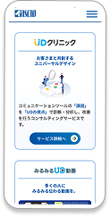
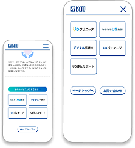

イベント出展 特設サイト制作
ー 多情報をスマートに伝えるLP設計 ー
LP 2025.11
2025年11月開催の UCDAアワード出展に向け、
自社が提供する4つのUD関連サービスを紹介する特設サイトを制作。
情報量が多い中でも、短時間で理解・選択できるUI設計を重視した。
●制作範囲
情報整理 / 画面デザイン １週間
コーディング １週間
●制作ツール
Figma / Visual Studio Code

まず「選ばせる」ためのカード型UI
記載する情報を絞り、ユーザーが直感的にサービスを選択できる設計
詳細閲覧後も迷わせない回遊導線
サービスページ末尾に
「各サービスボタン」を設置し、
情報閲覧が途切れない流れを設計した

操作パターンの統一による安心感
サービス選択ボタンとヘッダーメニューに
同一のカードデザインを採用し、認知負荷を軽減した
検討段階での別案
1ページ完結型として、
TOPに各サービスへのスクロールナビ /
閲覧中サービス名をヘッダーに表示する案も検討した
| 目的 |
|
| ターゲット | UCDAアワード来場者（自治体・保険会社・銀行など） |
| 課題 |
|
| デザイン・情報設計 |
|


一覧を見る